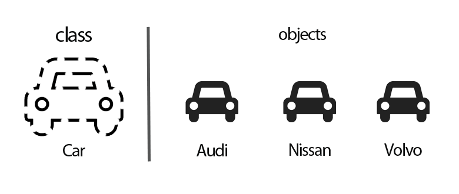

Информатика
Тема 8
Программирование на C++: основы ООП
Агенда
- Объектно-оринтированное программирование
- Структуры и классы в C++
- Объекты в стандартной библиотеке
Объектно-оринтированное
программирование
Новые понятия
- Объект
- Класс
- Абстракция
- Инкапсуляция
- Наследование
- Полиморфизм
Объект и класс
Абстракция в ООП
Представление сущностей только теми характеристиками, которые существенны в данной задаче, и сокрытие деталей
Инкапсуляция в ООП
Объединение данных и функций над этими данными в рамках одной структуры с сокрытием её внутреннего устройства
Структуры и классы в C++
Объекты в стандартной библиотеке
String
в стандартной библиотеке C++